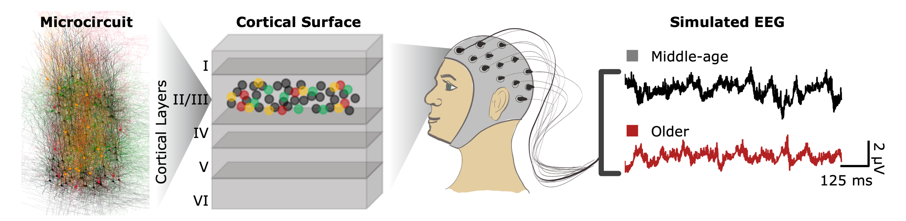

Research
My research focuses on understanding the roles of key inhibitory interneurons in brain health and disease. During my PhD, I developed biophysical models of hippocampal interneurons, revealing their ion channel mechanisms, synaptic recruitment during behavior, and age-related changes. In my postdoctoral work, I created data-driven models of human cortical microcircuits to study aging and depression. Using these models, I uncovered how mechanistic changes impair sensory processing, tested novel therapeutic compounds for recovery in silico, and identified EEG biomarkers to monitor drug efficacy and cognitive impairment. Additionally, I leveraged these models and biomarkers to train artificial neural networks that predict mechanisms underlying microcircuit dysfunction in elderly patients using EEG data.

Education
Ph.D. Physiology | Dr. Frances Skinner Lab, University of Toronto, Sep. 2015-Nov. 2019
M.Sc. Physiology | Dr. Frances Skinner Lab, University of Toronto, Sep. 2013-Sep. 2015
B.Sc. Highest Honors Neuroscience, Minor Chemistry | Carleton University, Ottawa, ON, 2009-2013
Experience
Postdoctoral Researcher | Dr. Etay Hay Lab, Krembil Centre for Neuroinformatics, CAMH, Dec. 2019 – Present
- Built biophysical models of human cortical microcircuits using genetic optimization algorithms to study depression and aging, enabling virtual pharmacology and mechanistic insight into brain dysfunction.
- Simulated novel drug effects to evaluate dosage-dependent recovery of neural processing, supporting biomarker discovery and in silico drug screening.
- Developed ML models using simulated EEG features to predict depression severity and optimize therapeutic dosing (supporting a patent-pending tool).
- Modeled age-related changes in neuron physiology to uncover mechanisms driving altered cortical activity in older adults.
- Led algorithm development and integrative analysis combining EEG, electrophysiology, and transcriptomics datasets in collaboration with cross-disciplinary research teams.
- Secured fellowships and contributed to validating model predictions through collaborative studies.
Graduate Researcher | Dr. Frances Skinner Lab, Krembil Centre for Neuroscience, UHN, Sep. 2013 – Nov. 2019
- Designed biophysical models of hippocampal disinhibitory interneurons (I-S3 cells) to uncover ion channel mechanisms of excitability and behavior-linked activation.
- Predicted synaptic recruitment of I-S3 cells during memory-relevant behaviors, where findings were validated in vivo by collaborators.
- Simulated downstream effects of I-S3 cells on synaptic targets (OLM cells) to quantify disinhibition-driven modulation of excitatory gating in hippocampal circuits.
- Collaborated on multi-study projects integrating computational and experimental work across aging, memory, and novelty encoding, contributing to several peer-reviewed publications.
Publications
- Guet-McCreight A, et al. (2024). Therapeutic dose prediction of α5-GABA receptor modulation from simulated EEG of depression severity. Plos Comput Biol. DOI: 10.1371/journal.pcbi.1012693.
- Guet-McCreight A, et al. (2024). In-silico testing of new pharmacology for restoring inhibition and human cortical function in depression. Commun Biol. DOI: 10.1038/s42003-024-05907-1.
- Tamboli S, Singh S, Topolnik D, Amine Barkat MEI, Radhakrishnan R, Guet-McCreight A, Topolnik L. (2024). Mouse hippocampal CA1 VIP interneurons detect novelty in the environment and support recognition memory. Cell Reports. 43(4):114115. DOI: 10.1016/j.celrep.2024.114115.
- Mazza F, Guet-McCreight A, Prevot TD, Valiante TA, Sibille E, Hay E. (2024). EEG biomarkers of α5-GABA positive allosteric modulators in rodents. BP:GOS. DOI: 10.1016/j.bpsgos.2024.100435.
- Mazza F, Guet-McCreight A, Valiante TA, Griffiths JD, Hay E. (2023). In-silico EEG biomarkers of reduced inhibition in human cortical microcircuits in depression. Plos Comput. Biol. DOI: 10.1371/journal.pcbi.1010986.
- Chen Y, Hunter E, Arbabi K, Guet-McCreight A, Consens M, Felsky D, Sibille E, Tripathy SJ. (2023). Robust differences in cortical cell type proportions across healthy human aging inferred through cross-dataset transcriptome analyses. Neurobiol. Aging. DOI: 10.1016/j.neurobiolaging.2023.01.013.
- Guet-McCreight A, et al. (2022). Age-dependent increased sag amplitude in human pyramidal neurons dampens baseline cortical activity. Cereb. Cortex. DOI: 10.1093/cercor/bhac348.
- Yao HK*, Guet-McCreight A*, et al. (2022). Reduced inhibition in depression impairs stimulus processing in human cortical microcircuits. Cell Reports. 38(2). DOI: 10.1016/j.celrep.2021.110232. Asterisk denotes authors who contributed equally to this work.
- Howard D, Chameh HM, Guet-McCreight A, Hsiao HA, Vuong M, Seo YS, Shah P, Nigam A, Chen Y, Davie M, Hay E, Valiante TA, Tripathy S. (2022). An in vitro whole-cell electrophysiology dataset of human cortical neurons. GigaScience. DOI: 10.1093/gigascience/giac108.
- Guet-McCreight A, Skinner FK. (2021). Deciphering how interneuron specific 3 cells control oriens lacunosum-moleculare cells to contribute to circuit function. J. Neurophysiol. 126(4):997-1014. DOI: 10.1152/jn.00204.2021.
- Guet-McCreight A, Skinner FK. (2020). Computationally going where experiments cannot: a dynamical assessment of dendritic ion channel currents during in vivo-like states [version 2; peer review: 2 approved]. F1000Research. DOI: 10.12688/f1000research.22584.2.
- Guet-McCreight A, Skinner FK, Topolnik L. (2020). Common Principles in Functional Organization of VIP/Calretinin Cell-Driven Disinhibitory Circuits Across Cortical Areas. Front. Neural Circuits. DOI: 10.3389/fncir.2020.00032. This article was included as part of the Frontiers in Neural Circuits - Editors Pick 2021 collection (link).
- Luo X*, Guet-McCreight A*, et al. (2020). Synaptic Mechanisms Underlying the Network State-Dependent Recruitment of VIP-Expressing Interneurons in the CA1 Hippocampus. Cereb. Cortex. DOI: 10.1093/cercor/bhz334. Asterisk denotes authors who contributed equally to this work.
- Francavilla R, Guet-McCreight A, Amalyan S, Hui CH, Topolnik D, Michaud F, Marino B, Tremblay ME, Skinner FK, Topolnik L. (2020). Alterations in intrinsic and synaptic properties of hippocampal CA1 VIP interneurons during aging. Front. Cell. Neurosci. DOI: 10.3389/fncel.2020.554405.
- Sekulic V, Yi F, Garrett T, Guet-McCreight A, Lawrence JJ, Skinner FK. (2020). Integration of Within-Cell Experimental Data With Multi-Compartmental Modeling Predicts H-Channel Densities and Distributions in Hippocampal OLM Cells. Front. Cell. Neurosci. DOI: 10.3389/fncel.2020.00277.
- Guet-McCreight A, Skinner FK. (2019). Using computational models to predict in vivo synaptic inputs to interneuron specific 3 (IS3) cells of CA1 hippocampus that also allow their recruitment during rhythmic states. PLoS One. DOI: 10.1371/journal.pone.0209429.
- Guet-McCreight A, et al. (2016). Using a semi-automated strategy to develop multi-compartment models that predict biophysical properties of interneuron specific 3 (IS3) cells in hippocampus. eNeuro. DOI: 10.1523/ENEURO.0087-16.2016.
Preprints
- Guet-McCreight A, Tripathy S, Sibille E, Hay E. Linking age changes in human cortical microcircuits to impaired brain function and EEG biomarkers. Biorxiv. DOI: 10.1101/2025.07.
- Moghbel F, Hassan MT, Guet-McCreight A, Hay E. Deriving connectivity from spiking activity in biophysical cortical microcircuits. Biorxiv. DOI: 10.1101/2024.06.13.598937.
Awards
- 2024-2027 CIHR Fellowship - Priority Announcement: Aging ($70,000/year)
- 2024-2026 Canadian Neuroanalytics Scholars Program ($70,000/year) - Declined
- 2023-2024 Labatt Family Research Fellowships in Depression Biology ($85,000)
- 2021-2022 Yuet Ngor Wong Award ($10,000)
- 2017-2019 NSERC CGS-D Scholarship ($35,000/year)
- 2016-2017 QEII-GSST Scholarship ($15,000)
- 2015-2016 QEII-GSST Scholarship ($15,000)
- 2015-2016 Unilever/Lipton OSOTF Graduate Fellowship ($2,000)
- 2013-2014 Mary H. Beatty Fellowship (Top-Up Award) ($5,000)
- 2013-2014 NSERC CGS-M Scholarship ($17,500)
- 2013 NSERC Undergraduate Student Research Award ($4,500)
- 2012-2013 Carleton Academic Scholarship ($2,500)
- 2011-2012 Carleton Academic Scholarship ($2,500)
- 2010-2011 Michael Oliver Scholarship ($2,500)
- 2010-2011 OUA Academic Achievement Award ($2,500)
- 2009-2010 Sprott Bursary ($4,500)
- 2009-2010 Doctor E. Bruce Tovee Award ($1,500)
- 2009-2013 Carleton University Dean’s Honor List